컴퓨터응용가공산업기사 (2009-08-30 기출문제)
1과목: 기계가공법 및 안전관리
1. 미식선반에서 피치가 P 이고, 일감의 나사피치가 p이며, 주축의 변환기어 잇수 ZS이고, 리드스크루의 변환 기어 잇수 ZL이라면 선반의 변환기어 공식에서, (p/P)의 값을 구하는 식으로 옳은 것은?
- 2ZS/ZL
- 2ZL/ZS
- ZS/ZL
- ZL/ZS
(정답률: 43%)

2. 대형의 공작물, 중량물(重量物)의 대형 평면이나 홈 등의 절삭에 가장 적합한 밀링머신은?
- 수직 밀링머신
- 모방 밀링머신
- 만능 밀링머신
- 플래노형 밀링머신
(정답률: 65%)
3. 슈퍼피니싱(superfinishing)의 특징과 거리가 먼 것은?
- 진폭이 수 mm이고 진동수가 매분 수백에서 수천의 값을 가진다.
- 가공열의 발생이 적고 가공 변질층도 작으므로 가공면 특성이 양호하다.
- 다듬질 표면은 마찰계수가 작고, 내마멸성, 내식성이 우수하다.
- 다듬질면에 구성인선이 발생한다.
(정답률: 75%)
4. 고 정밀도의 볼나사(Ball Screw)를 가장 많이 사용하고 있는 공작 기계는?
- CNC공작기계
- 범용선반
- 밀링머신
- 슬로터
(정답률: 69%)
5. 공구는 상하 직선운동을 하며 테이블은 직선운동과 회전운동을 하여 키 홈, 스플라인, 세레이션 등의 내면가공을 주로 하는 공작기계는?
- 세이퍼
- 슬로터
- 플레이너
- 브로칭
(정답률: 54%)
6. 테이퍼의 양끝 지름 중 큰 지름이 23.826mm, 작은 지름이 19.760mm, 테이퍼 부분의 길이가 81mm, 공작물 전체의 길이는 150mm이다. 심압대의 편위량은 약 몇 mm인가?
- 1.098
- 2.196
- 3.765
- 7.530
(정답률: 38%)
7. 연삭숫돌은 교환 후 안전도 검사를 위해서 몇 분 이상 공회전을 실시하는가?
- 1/2
- 1
- 3
- 5
(정답률: 77%)
8. 각도 측정을 할 수 있는 사인바(sine bar)의 설명으로 틀린 것은?
- 정밀한 각도측정을 하기 위해서는 평면도가 높은 평면에서 사용해야 한다.
- 롤러의 중심거리는 보통 100mm, 200mm로 만든다.
- 45° 이상의 큰 각도를 측정하는데 유리하다.
- 사인바는 길이를 측정하여 직각 삼각형의 삼각함수를 이용한 계산에 의하여 임의각의 측정 또는 임의각을 만드는 기구이다.
(정답률: 72%)
9. 탭으로 암나사 가공 작업시 탭의 파손원인이 아닌 것은?
- 탭 재질의 경도가 높은 경우
- 탭이 경사지게 들어간 경우
- 탭가공 속도가 빠른 경우
- 탭이 구멍바닥에 부딪쳤을 경우
(정답률: 82%)
10. 연마제를 가공액과 혼합하여 가공물 표면에 압축공기를 이용하여 고압과 고속으로 분사시켜 가공물 표면과 충돌시켜 가공하는 입자 가공법은?
- 액체호닝
- 숏 피닝
- 래핑
- 배럴가공
(정답률: 58%)
11. 밀링작업에 대한 안전사항으로 틀린 것은?
- 가동 전에 각종 레버, 자동이송, 급속이송장치 등을 반드시 점검한다.
- 정면커터로 절삭작업을 할 때 절삭상태의 관찰은 커터날 끝과 같은 높이에서 한다.
- 주축속도를 변속시킬 때에는 반드시 주축이 정지한 후에 변환한다.
- 밀링으로 절삭한 칩은 날카로우므로 주의하여 청소한다.
(정답률: 85%)
12. 단식분할법에서 웜과 직결된 크랭크 축이 40회전할 때 공작물과 함께 회전하는 분할대의 주축은 몇 회전을 시킬 수 있는가?
- 1/2회전
- 1회전
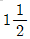
회전- 2회전
(정답률: 37%)
13. 구동 전동기로 펄스 전동기를 이용하며 제어장치로 입력된 펄스 수만큼 움직이고 검출기나 피드백 회로가 없으므로 구조가 간단하며 펄스 전동기의 회전 정밀도와 볼 나사의 정밀도에 직접적인 영향을 받는 방식은?
- 개방 회로 방식
- 반폐쇄 회로 방식
- 폐쇄 회로 방식
- 하이브리드 서보 방식
(정답률: 62%)
14. 드릴의 각부 명칭 중에서 드릴의 홈을 따라서 만들어진 좁은 날로, 드릴을 안내하는 역학을 하는 것은?
- 미진
- 랜드
- 시닝
- 탱
(정답률: 48%)
15. 절삭가공 시 표면에 나타나는 가공변질 층의 깊이에 영향을 주는 요소가 아닌 것은?
- 절삭조건
- 구동장치
- 가공물의 조직
- 경화능
(정답률: 59%)
16. 삼선법에 의해 미터나사의 유호지름 측정시 피치가 1mm인 나사에 사용할 삼선의 지름은 약 몇 mm인가?
- 0.5773
- 0.8660
- 1.0000
- 1.7320
(정답률: 38%)
17. 연삭조건에 따른 입도의 선정에서 거친 입도의 연삭숫돌 선택 기준으로 올바른 것은?
- 공구 연삭
- 다듬질 연삭
- 경도가 크고 메진 가공물의 연삭
- 숫돌과 가공물의 접촉 면적이 클 때의 연삭
(정답률: 47%)
18. 각각의 스핀들에 여러 종류의 공구를 고정하여 드릴가공, 리머가공, 탭가공 등을 순서에 따라 연속적으로 작업할 수 있는 드릴링 머신은?
- 탁상 드릴링 머신
- 다두 드릴링 머신
- 다축 드릴링 머신
- 레디얼 드릴링 머신
(정답률: 39%)
19. 모듈 5, 잇수 36인 표준 스퍼기어를 절삭하려면 바깥지름은 몇 mm로 가공하여야 하는가?
- 180
- 190
- 200
- 550
(정답률: 42%)
20. 연삭액의 작용에 대한 설명으로 틀린 것은?
- 연삭열은 흡수하고 제거시켜 공작물의 온도를 저하시킨다.
- 눈메움 방지와 공작물에 부착한 절삭칩을 씻어낸다.
- 윤활막을 형성하여 절삭능률을 저하시킨다.
- 방청제가 포함되어 연삭 가공면을 보호하고 연삭기의 부식을 방지한다.
(정답률: 82%)
2과목: 기계설계 및 기계재료
21. 다음 중 신소재의 기능성 재료에 해당하지 않는 것은?
- 형상기억 합금
- 초소성 합금
- 제진 합금
- 포정 합금
(정답률: 45%)
22. 다음 중 절삭 공구용 특수강은?
- Ni-Cr 강
- 불변강
- 내열강
- 고속도강
(정답률: 80%)
23. 다음 중 친화력이 큰 성분 금속이 화학적으로 결합하여, 다른 성질을 가지는 독립된 화합물을 만드는 것은?
- 금속간 화합물
- 고용체
- 공정 합금
- 동소 변태
(정답률: 65%)
24. 철-탄소 평형상태도에서 일어나는 불변 반응이 아닌 것은?
- 포정
- 포석
- 공정
- 공석
(정답률: 55%)
25. 주조된 상태에서 구상 흑연 주철의 조직이 아닌 것은?
- 페라이트 형
- 마텐자이트 형
- 시멘타이트 형
- 펄라이트 형
(정답률: 38%)
26. 다음 중 결정격자가 면심입방격자(FCC)인 금속은?
- Al
- Cr
- Mo
- Zn
(정답률: 53%)
27. 전연성이 좋고 색깔도 아름답기 때문에 장식용 금속잡화, 악기 등에 사용되고, 박(foil)으로 압연하여 금박의 대용으로도 사용되는 것은?
- 90%Cu ~ 10%Zn 합금
- 80%Cu ~ 20%Zn 합금
- 60%Cu ~ 40%Zn 합금
- 50%Cu ~ 50%Zn 합금
(정답률: 64%)
28. 다음 중 가장 낮은 온도에서 실시되는 표면 경화법은?
- 질화 경화법
- 침탄 경화법
- 크롬 침투법
- 알루미늄 침투법
(정답률: 48%)
29. 알루미늄의 특징을 설명한 것으로 틀린 것은?
- 광석 보크사이트로부터 제련하여 만든다.
- 염화물 용액에서 내식성이 특히 좋고, 영산, 황산 및 인산 중에서도 침식이 되지 않는다.
- 융점이 약 660°C이며 비중이 2.7 경금속이다.
- 대기 중에서 내식성이 좋고 전기 및 열의 양도체이다.
(정답률: 65%)
30. 복합재료 중 FRP는 무엇을 말하는가?
- 섬유 강화 목재
- 섬유 강화 플라스틱
- 섬유 강화 금속
- 섬유 강화 세라믹
(정답률: 83%)
31. 축의 직경 5cm, 길이 10cm 인 저널 베어링에 4kN 의 하중이 걸리는 경우 저널 베어링 압력은 몇 N/cm2 인가?
- 240
- 40
- 160
- 80
(정답률: 50%)
32. 다음 중 안전율을 구하는 식으로 맞는 것은? (단, 안전율 S, 항복응력 σu, 허용응력 σa)
- S = σu × σa
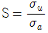
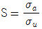
- S = σu ― σa
(정답률: 58%)
33. 다음 ( ) 안에 들어갈 말로 적절한 것은?
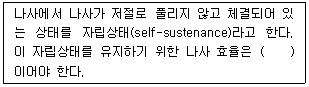
- 30% 이상
- 40% 이상
- 50% 미만
- 60% 미만
(정답률: 44%)
34. 미끄럼을 방지하기 위하여 접촉면에 치형을 붙여 맞물림에 의하여 전동하도록 조합한 벨트는?
- 평벨트
- V벨트
- 가는너비 V 벨트
- 타이밍벨트
(정답률: 57%)
35. 지름 50 mm의 축에 바깥지름 400 mm의 풀 리가 묻힘 키로 고정되어있고, 풀리의 바깥지름에 1.5kN의 접선력이 작용한다면 키에 작용하는 전단력은 약 몇 kN 인가?
- 1.8
- 1.5
- 7.5
- 12.0
(정답률: 15%)
36. 전위기어의 사용목적으로 거리가 먼 것은?
- 속도비를 크게 하기 위해서
- 언더컷을 방지하기 위해서
- 물림률을 증가시키기 위해서
- 이의 강도를 증대시키기 위해서
(정답률: 27%)
37. 동력의 단위에서 1 PS는 약 몇 [kW] 인가?
- 0.735
- 0.875
- 1.25
- 1.36
(정답률: 36%)
38. 직사각형 단면의 판을 그림과 같이 축방향으로 원추형으로 감아올린 압축용 스파이럴 스프링으로 주로 오토바이의 차체 완충용에 사용되는 스프링은?
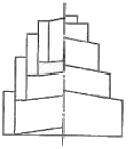
- 벌류트 스프링
- 원추형 코일 스프링
- 판 스프링
- 링 스프링
(정답률: 57%)
39. 반복하중을 받는 스프링에서는 그 반복속도가 스프링의 고유진동수에 가까워지면 심한 진동을 일으켜 스프링의 파손 원인 된다. 이 현상을 무엇이라 하는가?
- 캐비테이션
- 박리현상
- 환상 균열
- 서징
(정답률: 51%)
40. 두 개의 축이 평행하고, 그 축의 중심선의 위치가 약간 어긋났을 경우, 각속도는 변화 없이 회전동력을 전달시키려고 할 때 사용되는 가장 적합한 커플링은?
- 플랜지 커플링(flange coupling)
- 올덤 커플링(oldham coupling)
- 머프 커플링(muft coupling)
- 유니버설 커플링(universal coupling)
(정답률: 43%)
3과목: 컴퓨터응용가공
41. B-spline 곡선에 관한 설명으로 틀린 것은?
- 매듭값(knot value)이란 매개변수를 여러 범위로 나누어서 각각의 블렌딩 함수가 1 이 되는 범위의 경계값이다.
- 균일 B-spline곡선(uniform B-spline curve)은 매듭값의 간격이 항상 1의 등간격을 이루는 것이다.
- 곡선의 차수와 조정점(control point)의 개수는 무관하다.
- 한 개의 조정점이 움직이면 몇 개의 곡석 세그먼트만 영향을 받고 나머지는 변하지 않는다.
(정답률: 5%)
42. CAD/CAM 소프트웨어의 모델 데이터베이스에 포함되어야 하는 기본요소와 거리가 제일 먼 것은?
- 모델 형상
- 모델을 구성하는 그래픽 요소(attributes)
- 모델의 재질특성
- 설계자 인적사항
(정답률: 77%)
43. 와이어프레임(wireframe) 모델이 솔리드(solid) 모델링 방법으로 사용되기 어려운 이유를 나타내는 특성은?
- 모호성(ambiguity)
- 경계성(bounded)
- 등질 3차원성(homogeneously three dimensional)
- 유한성(finite)
(정답률: 38%)
44. NC의 발달과정에서 여러 대의 CNC공작기계를 하나의 컴퓨터에 의해 제어하는 시스템 단계는?
- CAE
- CIM
- FMS
- DNC
(정답률: 79%)
45. 파라메트릭 모델링(Parametric modeling)에 대한 설명으로 가장 알맞은 것은?
- 매개변수 방정식을 이용한 자유곡면 모델링 기법
- 형상 구속조건과 치수조건을 이요하여 모델링하는 기법
- 독립된 기본형상을 더하거나 빼면서 복잡한 형상을 모델링하는 기법
- 무수히 많은 작은 정육면체를 매개변수로 설정하여 형상을 모델링하는 기법
(정답률: 49%)
46. 바닥면이 없는 원추형 단면(conic section)을 바닥면에 평행하게 절단했을 때 얻을 수 있는 도형은?
- 타원(Ellipse)
- 쌍곡선(Hyperbola)
- 원(Circle)
- 포물선(Parabola)
(정답률: 46%)
47. 터빈 블레이드나 선박의 스크루(screw), 항공기 부품 등을 가공할 때 사용하는 가장 적합한 가공 방식은?
- 2.5축 가공
- 3축 가공
- 4축 가공
- 5축 가공
(정답률: 75%)
48. CAD/CAM 시스템의 출력장치 중에서 충격식으로 운영되는 프린터는?
- 열전사 프린터
- 도트 프린터
- 레이저 프린터
- 잉크젯 프린터
(정답률: 75%)
49. 다음 식에서 a가 –1＜ a ＜ 0 범위 내에 있으면 도형은 어떤 변환을 하는가?
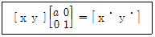
- x 방향의 확대
- y 방향의 확대
- x 방향으로 축소 후, y축에 대해 반사(reflection)
- y 방향으로 축소 후, x축 방향으로 전단(shearing)
(정답률: 48%)
50. CAD/CAM 시스템을 이용한 기본요소의 정의 방법 중에서 직선을 정의하는 방법이 아닌 것은?
- 한 개의 점과 수평선과의 각도를 사용하여 정의한다.
- 한 점과 어떤 원호의 접선이나 법선을 이용하여 정의한다.
- 중심점과 반지름을 정의한다.
- 두 개의 곡선에 접선을 연결하여 정의한다.
(정답률: 47%)
51. Solid model의 data 구조 중 CSG와 비교한 경계 표현방식(Boundary representation)의 특징은?
- 기본도형을 직접 입력하므로 data의 작성이 용이하다.
- 데이터의 수정이 용이하다.
- 위상요소와 기하요소를 사용하여 솔리드를 표현한다.
- Data 구조가 간단하여 적은 기억용량을 사용한다.
(정답률: 41%)
52. CAD/CAM시스템 간에 데이터베이스가 서로 호환성을 가질 수 있도록 해주는 모델의 입출력 데이터 표준 형식을 알맞은 것은?
- ISO
- IGES
- LISP
- ANSI
(정답률: 74%)
53. CSG 트리 자료구조의 일반적인 특징으로 틀린 것은?
- 자료구조가 간단하고 데이터의 양이 적다.
- CSG표현은 항상 대응되는 B-Rep모델로 치환 가능하다.
- 파라메트릭 모델링을 쉽게 구현할 수 있다.
- 리프팅이나 라운딩과 같이 편리한 국부 변형기능의 사용이 용이하다.
(정답률: 27%)
54. 작업물을 작은 공구를 가지고 처음부터 끝까지 가공하는 것은 작업 효율이 나쁘므로 공구의 크기가 큰 것에서 작은 순으로 3단계로 나누어 가공한다. 전 단계의 가공 후, 가공이 되지 않은 부분이 곡면간의 구석에 매우 적게 남아 있어서 단순히 곡선을 따라 가면서 가공하는 형태의 가공법을 무엇이라고 하는가?
- 황삭 가공
- 펜슬 가공
- 쾌속 가공
- 중삭 가공
(정답률: 60%)
55. 서로 다른 두 개의 곡면이 만날 때 매끄럽게 연결하는 모델링 기법은?
- 블렌딩(blending)
- 스키닝(skinning)
- 리프팅(lifting)
- 쉐이딩(shading)
(정답률: 66%)
56. 번스타인(Bernstein) 다항식에 의하여 주어진 점들을 표현하는 형상에 가깝도록 자유로이 형상을 제어 할 수 있는 곳선은?
- 단면 곡선
- 베지어 곡선
- 스파인 곡선
- 실루엣 곡선
(정답률: 75%)
57. 그림과 같은 삼각형 OAB를 원점을 중심으로 반시계 방향으로 60° 회전시킬 때 점 B(1, 2)의 회전한 점의 x 좌표를 α, y좌표를 β라 할 때 α+β 값은?
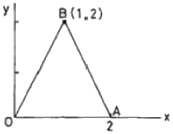
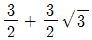
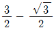
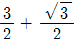
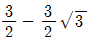
(정답률: 40%)
58. 다각형으로 표현된 곡면의 각 꼭지점에서 반사광의 강도를 보간하여 내부의 화소에서 반사광의 강도를 계산하는 렌더링 기법은?
- 퐁(Phong) 음영법
- 고라드(Gouraud) 음영법
- 광선 추적법
- Z 버퍼링
(정답률: 27%)
59. 3차원의 형상을 정의하는데 공학적인 해석이나 물리적 성질에 응용하기 위한 가장 완전한 정보를 제공하는 모델링 방법은 무엇인가?
- 와이어 프레임 모델(wire frame model)
- 서피스 모델(surface model)
- 솔리드 모델(solid model)
- 곡선 모델(curve model)
(정답률: 84%)
60. 2장의 얇은 유리판 사이에 작은 셀을 다수 배치하고 그 상하에 장착된 전극(+ 와 -) 사이에서 네온과 아르곤의 혼합가스에 방전을 일으켜 거기서 발생하는 자외선에 의해 자기발광시켜 컬러 화상을 재현하는 원리를 이용한 평판 디스플레이 장치는?
- Electroluminescent display
- Liquid crystal display
- Plasma display panel
- Image scanner
(정답률: 47%)
4과목: 기계제도 및 CNC공작법
61. 보기와 같은 축 A와 부시 B의 끼워 맞춤에서 최소 틈새가 0.2mm이고, 축의 공차가 0.50mm일 때, 축 A의 최대치수와 최소 치수는?
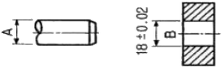
- 최대 : 17.78mm, 최소 : 17.28mm
- 최대 : 18.02mm, 최소 : 17.52mm
- 최대 : 18.00mm, 최소 : 17.50mm
- 최대 : 18.28mm, 최소 : 17.78mm
(정답률: 42%)
62. 그림과 같은 투상도는 제 3각법 정투상도이다. 우측면도로 가장 적합한 것은?
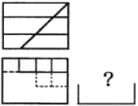
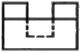
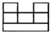
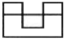
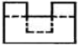
(정답률: 51%)
63. 다음과 같은 부분 조립도에서 기능상 부품 ①을 나타낸 투상도로 가장 적합한 것은?
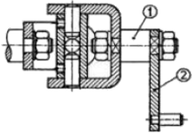
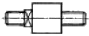
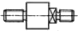
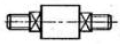
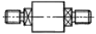
(정답률: 67%)
64. 기계제도 도면을 그리다 보면 선이 우연히 겹치는 경우가 많다. 답항의 선들이 모두 겹쳤을 때에 가장 우선적으로 나타내야 하는 선은?
- 절단선
- 무게중심선
- 치수 보조선
- 숨은선
(정답률: 72%)
65. 가공 방법의 기호 중 줄 다듬질을 나타내는 것은?
- FL
- FF
- FS
- FR
(정답률: 73%)
66. /data/bo/bo20090830/bo20090830m66m1.gif"> 과 같이 치수 밑에 굵은 실선을 적용하였을 때 이 치수에 대한 해석으로 옳은 것은?
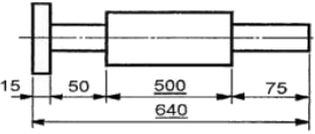
- 500 의 치수 부분은 비례척이 아님
- 치수 500 만큼 표면 처리를 함
- 치수 500 부분을 특히 정밀 가공을 함
- 치수 500 은 참고 치수임
(정답률: 45%)
67. 용접 기호 중 의 용접 종류는?
- 필릿 용접
- 비드 용접
- 점 용접
- 프로젝션 용접
(정답률: 76%)
68. 기준치수가 30, 최대 허용치수가 29.98, 최소 허용치수가 29.95일 때 아래 치수 허용차는 얼마인가?
- +0.⑤
- +0.03
- -0.⑤
- -0.02
(정답률: 50%)
69. 표면의 결을 도시할 때 제거가공을 허용하지 않는다는 것을 지시하는 기호는?
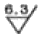
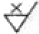
(정답률: 67%)
70. 그림과 같은 도면에서 치수 20 부분의 굵은 1점 쇄선표시가 의미하는 것으로 가장 적합한 설명은?
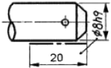
- 공차가 ø8h9 되게 축 전체 길이부분에 필요하다.
- 공차 ø8h9 부분은 축 길이 20 되는곳 까지만 필요하다.
- 치수20부분을 제외하고 나머지 부분은 공차가 ø8h9 되게 가공한다.
- 공차가 ø8h9 보다 약간 적게 한다.
(정답률: 72%)
71. 머시닝센터 프로그래밍에서 공구 교환을 지령하는 보조 기능은?
- M06
- M09
- M30
- M99
(정답률: 78%)
72. CNC선반에서 지령값 X25.0으로 프로그램하여 내경을 가공 후 측정하였더니 ø24.4 이었다. 해당 공구의 공구 보정값을 얼마로 수정해야 하는가? (단, 현재의 공구 보정값은 X = 4.2, Z = 6.0 이고, 직경 지정임)
- X = 4.8, Z = 6.0
- X = 4.8, Z = 6.6
- X = 3.6, Z = 6.0
- X = 3.6, Z = 6.6
(정답률: 62%)
73. CNC공작기계의 특징이 아닌 것은?
- 제품의 균일성이 향상된다.
- 작업시간 단축으로 생산성이 향상된다.
- 특수공구의 제작으로 공구관리비가 많이 소요된다.
- 범용 공작기계보다 기계 가격이 비싸다.
(정답률: 80%)
74. CNC공작기계로 자동운전 중 다만 이송만 멈추게 하려면 어느 버튼을 누르는가?
- FEED HOLD
- SINGLE BLOCK
- DRY RUN
- Z AXIS LOCK
(정답률: 73%)
75. 다음 중 공구경 보정을 시작하는 블록(Start-Up 블록)은?
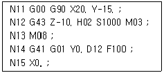
- N11
- N12
- N14
- N15
(정답률: 57%)
76. CNC 방전가공에 대한 설명 중 가공속도를 빠르게 하는 조건으로 가장 적합한 것은?
- 방전시간을 작게 한다.
- 휴지시간을 작게 한다.
- 방전에너지를 작게 한다.
- 방전 최대전류를 작게 한다.
(정답률: 66%)
77. 서보 모터(servo motor)에서 위치 검출을 수행하는 방식으로서, 백래시(backlash)의 오차를 줄이기 위해 볼스크루(ball screw) 등을 활용하여 정밀도 문제를 해결하고 있으며 일반 CNC공작기계에서 가장 많이 사용되는 다음과 같은 서보(servo) 방식은?
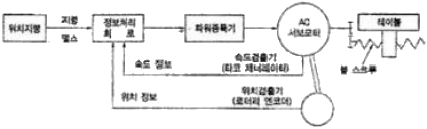
- 개방회로 방식(open loop system)
- 반폐쇄회로 방식(semi-closed loop system)
- 폐쇄회로 방식(closed loop system)
- 반개방회로 방식(semi-open loop system)
(정답률: 72%)
78. 그림에서 현재의 공구위치가 점 P1이며, P2를 거쳐 P3까지 원호가공을 하려 한다. 가장 알맞은 프로그램은?
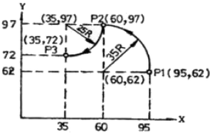
- N100 G90 G17 X60. Y97. I-35. J0 F300 ;
N101 G03 X35. Y97. I-25. J0 ; - N100 G90 G17 G03 X60. Y97. I0. J-35. F300 ;
N101 G02 X35. Y97. I-25. J0 ; - N100 G90 G17 G02 X60. Y97. I-35. J0 F300 ;
N101 G03 X35. Y72. I-25. J0 ; - N100 G90 G17 G03 X60. Y97. I-35. J0 F300 ;
N101 G02 X35. Y72. I-25. J0 ;
(정답률: 50%)
79. 다음 준비기능 중 명령된 블록(Block)에서만 지령이 유효한(one-shot) G 코드는?
- G00
- G01
- G04
- G97
(정답률: 60%)
80. CNC공작기계에 이상 발생시 작업자가 할 응급처치 요령 중 관계가 먼 것은?
- 작업을 멈추고 원인을 제거한다.
- 경고등이 점등되었는지 확인한다.
- 강전반의 회로도를 점검한다.
- 비상스위치를 작동시켜 작업을 정지한다.
(정답률: 73%)
p/P = ZS/ZL
여기서 p는 일감의 나사피치, P는 미식선반의 피치입니다. ZS는 주축의 변환기어 잇수, ZL은 리드스크루의 변환 기어 잇수입니다.
따라서 옳은 답은 "ZS/ZL"입니다. 이유는 주축의 변환기어와 리드스크루의 변환 기어는 서로 반대 방향으로 회전하기 때문에, 변환 기어 잇수의 비율이 p/P와 반대로 되어야 합니다. 따라서 ZS/ZL이 옳은 답입니다.